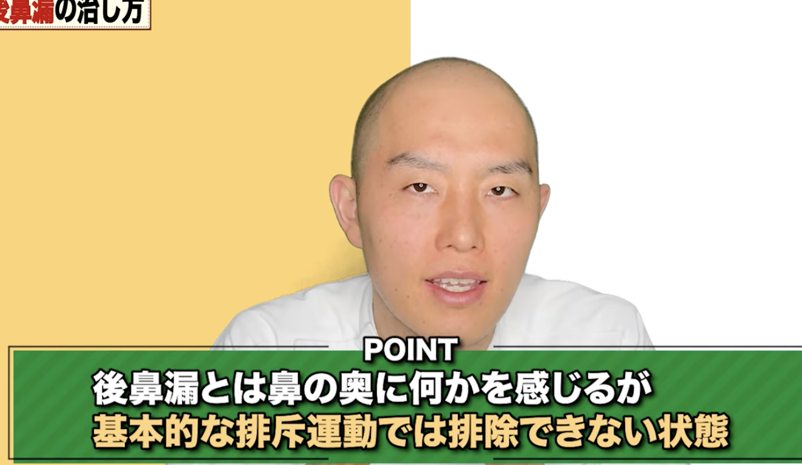
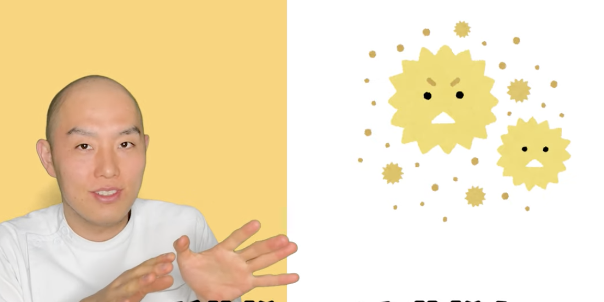
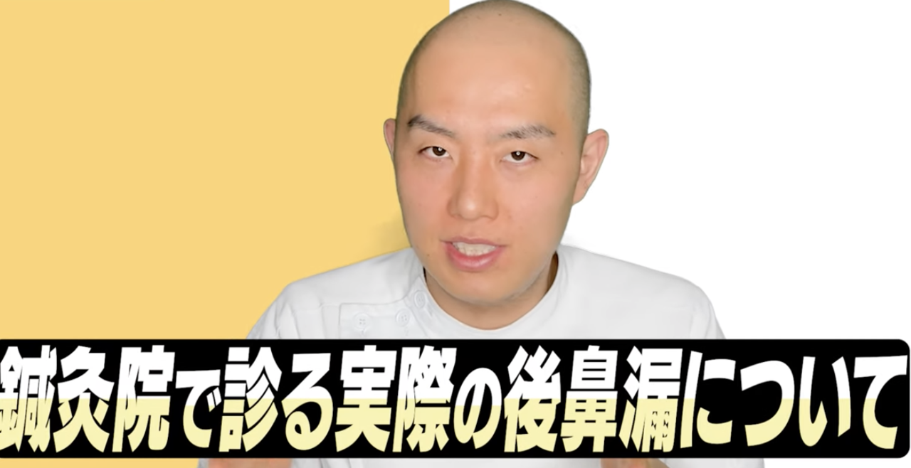
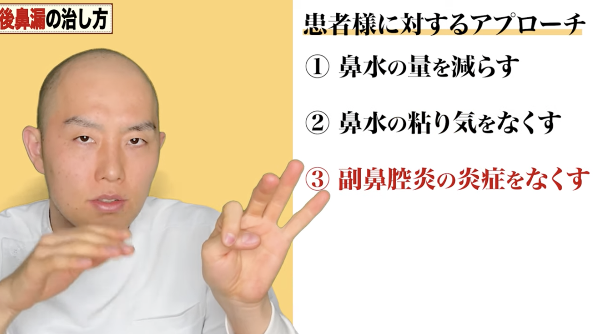

後鼻漏の鍼灸
過剰な鼻水や粘り気のある分泌物が喉へ流れ落ちる不快な症状です。耳鼻科での原因治療と併用し、炎症の軽減と鼻奥の神経過敏を鍼灸で整えます。
まず知っておきたい要点と施術方針
後鼻漏は、本来自然に喉へ流れて気にならない鼻水が、副鼻腔炎、アレルギー性鼻炎、上咽頭炎、逆流性食道炎などの影響で量が増えたり粘り気が強くなったりして喉に張り付き、強い不快感や咳を引き起こす状態です。当院の臨床では、抗生物質治療後に鼻の奥の神経が過敏になり違和感が残るタイプと、免疫反応による慢性炎症が続くタイプの2パターンが多くみられます。まずは耳鼻咽喉科で真性後鼻漏や原因疾患の有無を確認することが大切です。（公式解説）
このようなお悩みはありませんか？
- ✓鼻水が喉の奥に垂れ込み、常に引っかかり感や不快感がある
- ✓喉に絡む痰や鼻水を出そうとして咳込みが続いている
- ✓副鼻腔炎の治療後も鼻の奥の違和感だけがずっと残っている
- ✓不快感で食事や夜の睡眠に支障が出ている
当院の施術アプローチ
院長YouTube解説・関連動画
公開日：２０２１年 １０月２３日
更新日：２０２４年 ４月 ４日
本日は後鼻漏について解説させていただきます。
☆本記事の内容
- •後鼻漏とは
- •後鼻漏の原因
- •後鼻漏の症状
- •後鼻漏の改善方法
- •後鼻漏のまとめ
- •後鼻漏は鼻の奥に何かがあると感じるが意図的な排斥運動では排除できない状態
- •後鼻漏の原因はいろいろある
- •後鼻漏の症状は、鼻水が喉まで流れ落ちてくること
- •鼻水の量を減らす、鼻水の粘り気をなくす、副鼻腔炎の炎症をなくす
- •後鼻漏と咳
- •後鼻漏に効果的なツボ
銀座そうぜん鍼灸院の宗前です。
このページを書いている私は、鍼灸師として１３年、担当した利用者様数８０，０００人を誇り、病気の休職者３００人を社会復帰できるまで回復させてきた実績があります。
🎥 他のYouTube切り抜き・解説を読む（あと2件）▼
後鼻漏は鼻の奥に何かがあると感じるが意図的な排斥運動では排除できない状態

後鼻漏は、過剰に分泌された鼻水が喉まで流れ落ちてくる状態のことです。鼻の奥に何かがあると感じるが、意図的な排斥運動では排除できない状態になります。多くの場合は、鼻水が流れ落ちる感覚で不快感や咳といった鼻や喉の奥に苦しい感覚を感じます。
鼻水が喉へ流れ落ちてくる時に不快感があり、喉の粘膜を傷つけてしまうこともあるため注意が必要になります。症状が重くなると日常生活にも大きな影響を及ぼします。
後鼻漏の原因はいろいろある

後鼻漏の原因として考えられることは、急性や慢性の鼻炎、アレルギー性鼻炎、副鼻腔炎、好酸球性副鼻腔炎、上咽頭炎、トーンワルト病、逆流性食道炎や咽喉頭酸逆流症、鼻ポリープ、腫瘍、感覚障害、加齢などです。
人間は1日に６４リットルの鼻水が流れると言われています。普通、鼻から喉に向けて自然に流れる粘液線毛機能という仕組みができているため、何も気にせず流れます。
鼻水は2つの細胞がさらさらとした鼻水とどろどろした鼻水を出しており、両方が混ざってできています。しかし、副鼻腔炎などの炎症が起きていると鼻水に粘り気が出てきてしまいどろどろした鼻水の割合が増え、喉の奥に流れる鼻水が止まってしまい自覚しやすくなるのです。
病院に行くと喉の奥をみてもらうと思います。医師が目視で確認できる鼻水の後鼻漏は真性後鼻漏です。真性後鼻漏の場合は、鼻の中鼻漏と副鼻腔炎の状態と密接に関係しているため、鼻の構造の問題や副鼻腔炎の炎症度合いによって後鼻漏の重症度が推測できます。
アレルギー:花粉、ダニ、動物の毛、カビなどのアレルギー原因物質に反応して、鼻の粘膜が刺激され、過剰な粘液が生成されます。
副鼻腔炎:細菌やウイルスによる副鼻腔の感染が、副鼻腔からの分泌物の増加を引き起こします。
風邪やインフルエンザ:上気道感染症は、鼻や喉の粘膜を刺激し、分泌物を増加させます。
妊娠:妊娠中のホルモン変化によって、鼻腔の粘膜が腫れ、分泌物が増えることがあります。
ガストロエソファジアル逆流症:胃酸が食道へ逆流し、喉や鼻腔に影響を与えることがあります。
特定の薬剤の副作用:高血圧の薬や避妊薬など、特定の薬剤が後鼻漏の原因となることがあります。
環境因子:乾燥した空気、汚染、温度の変化などの環境因子が鼻腔の刺激となることがあります。
食品および飲料:スパイシーな食べ物、アルコールなどの特定の食品や飲料が鼻腔の分泌物を増加させることがあります。
後鼻漏は多くの場合、重大な健康問題を示すものではありませんが、症状が長期間続く場合や他の症状が伴う場合は、病院に行くことが重要です。
後鼻漏の症状は、鼻水が喉まで流れ落ちてくること
後鼻漏の症状は、鼻水が喉まで流れ落ちてくることです。鼻水が喉まで流れ落ちてくることによって様々な症状が起きます。咳込みや痰の絡み、喉の引っかかりや違和感や強い不快感などです。
強い不快感を感じることによって食事や睡眠などに影響が出て、日常生活に支障が出ることも多いです。
喉の異物感または粘液感:喉の後ろに粘液が絶えずあるような感覚が最も典型的な症状です。
連続的な咳:特に夜間や朝方に、喉の刺激によって引き起こされる咳が起こります。
喉の刺激や痛み:継続的な咳や粘液によって喉が刺激され、痛みや不快感が生じることがあります。
頻繁なのどのクリア:粘液を除去しようとして、頻繁に喉をクリアする必要があります。
声のかすれ:声帯が粘液によって刺激され、声がかすれることがあります。
悪口臭:粘液が口内に滞留することによる悪口臭が起こります。
耳の圧迫感:鼻と耳をつなぐ耳管に粘液が影響を与えることによる耳の圧迫感や詰まりが起こります。
息苦しさ:特に粘液が気道を塞ぐことで、呼吸が苦しくなることがあります。
嚥下困難:粘液が喉に溜まることにより、食べ物や飲み物の嚥下が困難になることがあります。
後鼻漏は、しばしばアレルギーや感染症など他の病状と関連しています。
これらの症状が現れた場合は、特に症状が長期間続く場合や他の症状が伴う場合には、病院に行くことが重要です。

後鼻漏の症状で病院に行くと、多くの場合は抗生物質を処方されたり鼻うがいを勧められたりします。
改善方法は原因によって違います。まずは原因となる病気を改善することが大切です。基本的には、鼻水を吸引して吸い出し、薬を使って原因となる病気を改善していきます。病気によっては症状の程度が重い場合、手術を行うこともあります。
脱水症状の管理:十分な水分を摂取し、脱水を防ぎます。これにより粘液の粘度が減少し、排出が容易になります。
塩水でのうがい:塩水でうがいをすることで、喉の粘液を薄め、刺激を和らげることができます。
鼻洗浄:鼻洗浄器や生理食塩水スプレーを使用して、鼻の粘膜を清潔に保ち、余分な分泌物を除去します。
抗ヒスタミン薬と点鼻薬:アレルギーが原因の場合、抗ヒスタミン薬やステロイドを含む点鼻薬が有効です。
アレルギーの改善:アレルギーが原因である場合、長期的なアレルギーの改善が有効な場合があります。
GERDの改善:胃食道逆流症が原因の場合、プロトンポンプ阻害薬などの薬での改善が行われます。
気化器や加湿器の使用:空気を湿らせることで、呼吸器系の粘膜を湿潤に保ち、粘液の排出を助けます。
環境要因の管理:空気中の刺激物を避けることが重要です。
抗ヒスタミン薬:アレルギーが原因の場合、抗ヒスタミン薬が処方されます。これには、セチリジン（ジルテック）、ロラタジン（クラリチン）、フェキソフェナジン（アレグラ）などが含まれます。抗ヒスタミン薬は、アレルギー反応を抑え、鼻水やくしゃみなどの症状を緩和します。
点鼻ステロイド薬:アレルギー性鼻炎や慢性副鼻腔炎による後鼻漏には、点鼻ステロイドが有効です。例えば、フルチカゾン（フリックスナーゼ）、モメタゾン（ネゾネックス）、ブデソニド（ライノコート）などがあります。これらの薬は、鼻の粘膜の腫れを減らし、過剰な分泌物を抑制します。
アレルギー注射:特定のアレルゲンに対するアレルギー注射が、アレルギー性後鼻漏の改善に用いられることがあります。
鼻洗浄:生理食塩水の点鼻や鼻洗浄は、過剰な粘液を洗い流し、鼻の通りを良くするのに役立ちます。
GERDの薬:胃食道逆流症が原因の場合、オメプラゾール、ラベプラゾールなどのプロトンポンプ阻害薬やランチジン、ファモチジンなどのH2ブロッカーが処方されます。
鍼灸院でみる後鼻漏
後鼻漏を発症した人で鍼灸院に来院する場合、
①抗生物質の改善が終わった人
②鼻の炎症が止まらないため病院の先生に見捨てられた人
の２パターンの後鼻漏があります。
①と②のそれぞれのタイプで改善方法が違います。
①の抗生物質の改善が終わった人は副鼻腔炎は改善しているため、鼻水の粘り気はなく訴えだけが残っています。咽喉頭異常感症といい、鼻の奥の神経が興奮して後鼻漏と誤認しているケースです。
②の鼻の炎症が止まらないため病院の先生に見捨てられた人は自分の免疫細胞が過剰に反応してしまい、鼻での炎症が続いています。
２パターンに共通する基本的な改善の方針は、鼻水の量を減らすこと、鼻水の粘り気をなくすこと、副鼻腔炎の炎症を限りなくなくすことです。

後鼻漏では症状としてよく咳が出ることがあります。これは、喉についた鼻水を出そうとして起こる症状です。そのため、無理に抑えず、自然に出すことをおすすめします。
常に喉に鼻水が残っている状態になるため、強い不快感を感じることが非常に多いです。強い不快感は、日常生活で欠かせない食事や睡眠などに影響が出ることも多いです。
そのため、咳を改善しようと考えるのではなく、後鼻漏を改善していくことが必要です。後鼻漏を改善するためには原因となる病気を改善することが大事です。
耳鼻咽喉のお悩みのツボ図解とセルフケア
実際の施術ではお一人おひとりの体質・症状に合わせて選穴しますが、耳鼻咽喉領域（アレルギー性鼻炎・耳鳴り・突発性難聴併用・顎関節症）の臨床でよく用いられる代表的なツボの目安です。

📌 代表的なツボの詳細一覧表を開く（6穴） ▼
| ツボ名 | 位置の目安 | 主な狙い | セルフケアの注意点 |
|---|---|---|---|
| 聴宮（ちょうきゅう） | 耳の穴の前（耳珠）のすぐ前、開口時のくぼみ | 耳鳴り・耳閉感・顎関節周囲の血流改善 | 口を軽く開けてごく優しく（顎痛時は無理に開けない） |
| 翳風（えいふう） | 耳たぶの後ろ、乳様突起と下顎骨の間のくぼみ | 耳鳴り・めまい・難聴ケア・耳周囲循環改善 | 顔面神経近接のため強圧を避け温め・軽圧で |
| 迎香（げいこう） | 小鼻の左右の膨らみのすぐ脇（ほうれい線上） | 鼻づまり・アレルギー性鼻炎の鼻腔通気改善 | 皮膚が薄いためこすらず指先で軽く押す |
| 印堂（いんどう） | 左右の眉頭のちょうど中央 | 鼻づまり・副鼻腔の重だるさ・自律神経鎮静 | 指の腹でゆっくり5秒圧迫または優しくさする |
| 下関（げかん） | 耳の前、頬骨のアーチの下縁のくぼみ | 顎関節症・咬筋の過緊張・耳周囲の放散痛緩和 | 圧痛が出やすいため痛気持ちいい手前の弱圧で |
| 完骨（かんこつ） | 耳後ろの硬い骨（乳様突起）の後下方のくぼみ | めまい・耳鳴り・胸鎖乳突筋〜後頭部の緊張緩和 | めまい発作時は頭を動かさず座位で軽く押さえる |
国際査読論文の科学的エビデンス
国際的な医学データベース（PubMed・Cochrane等）で報告されている耳鼻咽喉領域（アレルギー性鼻炎・耳鳴り・突発性難聴併用・顎関節症）領域の代表的な査読済み鍼灸研究をまとめています（標準治療との併用や研究上の限界を含めて正確に掲載）。
📚 査読論文データ・PubMed出典リンクを開く（4件） ▼
| 年・研究デザイン | 対象・規模 | 主な結果 | 限界・出典 |
|---|---|---|---|
| 2013年 大規模多施設RCT | 季節性アレルギー性鼻炎 422名（ドイツ） | 7〜8週のRQLQ QOLがシャム比0.5点・薬単独比0.7点改善（P<0.001）、頓用薬使用も有意減少（P<0.001）。 | 1年目16週では群間差消失、臨床的意義は慎重評価。 Ann Intern Med (PMID: 23420231) |
| 2021年 メタ解析 | 耳鳴り 8 RCTs（n=504） | 生活支障度THI（MD -10.11, p<0.001）・TSI（MD -8.36, p<0.001）が有意改善。VASは有意差なし（p=0.06）。 | 組入れRCTの質・サンプル規模に限界あり。 Acupunct Med (PMID: 32772848) |
| 2026年 ネットワークメタ解析 | 突発性難聴 36研究（n=3,360・標準治療併用） | ステロイド等の標準治療への鍼灸併用で総有効率RR 1.19（p<0.0001）、3週間コースが推奨。 | エビデンス確実性は低く標準治療（早期ステロイド）併用が前提。 Complement Ther Med (PMID: 42918509) |
| 2023年 メタ解析 | 成人顎関節症 22 RCTs統合（n=471） | 標準治療併用で有効率RR 1.36・疼痛VAS MD -1.23と有意改善。 | GRADE確実性は低〜非常に低、さらなる高品質RCTが必要。 Medicine (PMID: 37746950) |
参考文献・出典
- 銀座そうぜん鍼灸院「後鼻漏の公式解説ページ」
- 2013年 大規模多施設RCT（季節性アレルギー性鼻炎 422名（ドイツ））— Ann Intern Med (PMID: 23420231)
- 2021年 メタ解析（耳鳴り 8 RCTs（n=504））— Acupunct Med (PMID: 32772848)
- 2026年 ネットワークメタ解析（突発性難聴 36研究（n=3,360・標準治療併用））— Complement Ther Med (PMID: 42918509)
- 2023年 メタ解析（成人顎関節症 22 RCTs統合（n=471））— Medicine (PMID: 37746950)
よくある質問（FAQ）
Q. 抗生物質を飲み終えて副鼻腔炎は良くなったと言われましたが、喉の不快感が残っています。▼
Q. 自宅で鼻通を押すときの注意点はありますか？▼
あわせて読まれる関連疾患（耳鼻咽喉のお悩み）
ある日突然片耳などが聞こえにくくなる感音難聴です。発症早期の耳鼻科ステロイド治療を最優先に、早期併用や回復期の耳鳴り・めまいをケアします。
実際には音がないのに耳の中で雑音が聞こえる状態です。耳の血流や自律神経・脳の過敏さを整えるケアで軽減を目指します。
鼻の奥と喉の境目（上咽頭）の炎症です。耳鼻科治療と並行し、Bスポット療法後にも残りやすい症状へ深層筋・自律神経・体液循環から多角的にアプローチします。
実際の匂いが別物に感じられたり存在しない匂いを感じる嗅覚の質的障害です。耳鼻科での精査を前提に、鼻周囲と脳の過緊張の双方へアプローチします。
鼻の左右を分ける鼻中隔が大きく曲がり鼻詰まりや口呼吸を起こす状態です。粘膜の腫れや頭痛などの付随症状を和らげます。
鼻や副鼻腔の慢性炎症で粘膜がきのこ状に腫れて垂れ下がる状態です。耳鼻科治療を基本に鼻周囲の巡りと不快感をケアします。
おひとりで悩まず、まずはご相談ください
銀座本院・川口・大宮・横浜・博多・田無の各院でご予約を承っております。